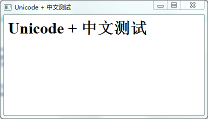

文件编码
首先要了解一下ASCII，Unicode的区别
不了解的可以上网查，网上相关的资料非常多，我就简单说说跟我们工程相关的。
- 最早产生的是ASCII，它表现能力有限，只能表示英文和少部分符号，对于中文来说需要用GB2312、GBK等编码格式（这些都是地区编码规范），比如台湾有BIG5，日本也有日本自己的，总是很多很乱。
- 后来为了统一，ISO - (international standard orginaztion) 国际标谁化组织，提出规范化编码措施，规定必须用两个字节，也就是16位来统一表示所有的字符，这就是UNICODE。
- 对于英文字母,unicode也需要两个字节来表示。所以unicode不便于传输和存储。因此UTF（UCS Transfer Format）标准出现了，顾名思义，UTF8就是每次8个位传输数据，而UTF16就是每次16个位，只不过为了传输时的可靠性，从UNICODE到UTF时并不是直接的对应，而是要过一些算法和规则来转换。
- UTF-8互联网上使用最广的一种Unicode的实现方式，它是在统一码（Unicode）基础上细化并优化后的一种长度可变的字符编码方式，除了UTF-8，还有UTF-16，UTF-32等都可以实现Unicode。其实UTF8并不算是一种电脑编码，而是一种储存和传送的格式，因为网页在传输的过程中都会转换为UTF-8的形式进传输，所以很多网站索性直接将页面编码成UTF-8，省去了转码的过程。
想必你已经了解了不同编码的区别了，所以我推荐使用UNICODE编码，有利于移植和拓展（比如支持多语言环境）。
python的文件编码
在python的文件的第一行加入
#coding:utf-8
这样python文件就默认以utf-8编码了
qtwebkit加载文件的编码
我们的HTML、CSS、Javascript等加载都qtwebkit的文件都要以unicode编码
用记事本打开上述文件，点击：文件=>另存为=>编码Unicode
让数据类型支持unicode：（python的数据类型与pyqt数据类型）
Python和PyQt中的类型对应关系：
- Python string object可以理解为一个接一个字节（byte，8位）的字节组，至于表示什么编码，与表示文字有关（可以理解成地区编码如GBK），PyQt中与之相当的是QByteArray，注意不是QString。
- Python Unicode object顾名思义就是Unicode了，定义语法为：u”Python Unicode object”、u”中文”，PyQt中与之对应的就是QString了。
因为我们要用Unicode，所以python中，我们用的是Python Unicode object，在pyqt中，我们用的是QString
实现
1 | # -*- coding:utf-8 -*- |

注意：python的print函数是不支持直接打印输出的，所以要用print unicode(message)，我们在console看到了：”Unicode + 中文测试“